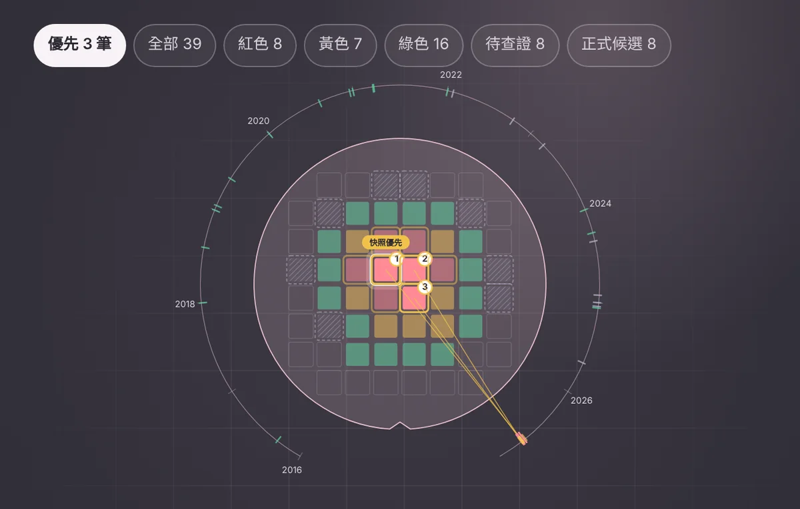
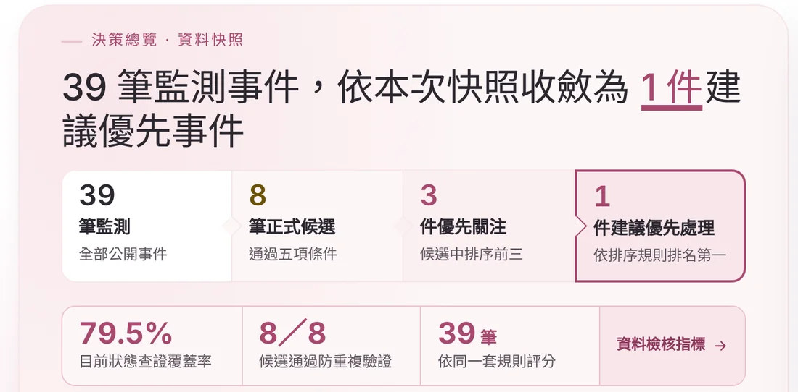
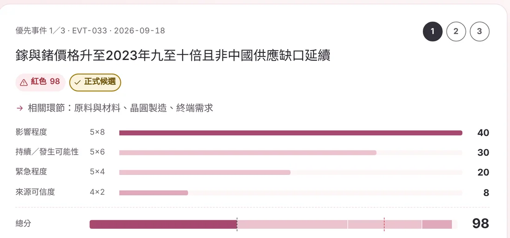

點圖可放大，也可以抓著拉拉看
01 · 個人作品
外部風險事件預警
半導體供應鏈
要解決的問題
出口管制、工廠停工、原料漲價這類消息，散在政府公告、公司公告和產業新聞裡。要判斷哪些事件現在還有影響、哪一件該先處理，通常得靠人一則一則讀。
我怎麼做
- 用 Google Sheets 整理 39 筆公開事件，每筆都附來源網址。
- 訂出評分規則（影響、可能性、緊急程度、來源可信度），再加上五項條件，篩出需要通知的事件。
- 用 Apps Script 替符合條件的事件建立 Gmail 草稿，由人確認後才寄出；同一筆事件不會重複建立草稿。
- 把結果做成晶圓圖：每一格代表一筆事件，越靠中心分數越高。
結果與限制
39 筆事件中，有 8 筆符合通知條件，並依分數排出處理順序。展示網站是去識別化的資料快照，不是即時監控；公司營運情境是示範設定。
Google SheetsApps ScriptGmailHTML／CSS／JS